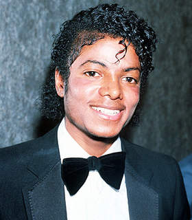

Micheal Jackson
The famous "king of pop"

Jackson before his paler Appearance.
A highlight of some of Jackson's experiences from birth to death.
- 1958- Micheal Jackson was born in Gary Indiana near Chicago on August 29th, 1958 to Joseph and Katherine Jackson, his father and mother as the eight child of the ten children of the jackson family. His siblings included Rebbie, Jackie, Tito, Jermaine, La Toya, Marlon, Randy and Janet who also made highlights in the music industry.
- 1964- He joined Jackson Brothers a band formed by their father which included Jackie, Tito, and Jermaine as backup musicians playing congas and tambourine.
- 1965- He began sharing lead vocals with Jermaine, and the group's name was changed to the Jackson 5.
- 1978- Jackson moved to New York City to star as the Scarecrow in The Wiz, a musical directed by Sidney Lumet. It costarred Diana Ross, Nipsey Russell, and Ted Ross.
- 1979- Jackson broke his nose during a dance routine. A rhinoplasty led to breathing difficulties that later affected his career. Jackson's fifth solo album, Off the Wall (1979) established him as a solo performer and helped him move from the bubblegum pop of his youth to more complex sounds.
- 1980- Jackson won three American Music Awards for his solo work: Favorite Soul/R&B Album, Favorite Soul/R&B Male Artist, and Favorite Soul/R&B Single for "Don't Stop 'Til You Get Enough". He also won a Grammy Award for Best Male R&B Vocal Performance for 1979 with "Don't Stop 'Til You Get Enough".
- 1982- Jackson's sixth album, Thriller, was released in late 1982. It was the best-selling album worldwide in 1983, and became the best-selling album of all time in the US and the best-selling album of all time worldwide, selling an estimated 66 million copies. It topped the Billboard 200 chart for 37 weeks and was in the top 10 of the 200 for 80 consecutive weeks. It was the first album to have seven Billboard Hot 100 top 10 singles, including "Billie Jean", "Beat It", and "Wanna Be Startin' Somethin' ".
- 1984- During a simulated concert before a full house of fans, pyrotechnics accidentally set Jackson's hair on fire, causing second-degree burns to his scalp. Jackson underwent treatment to hide the scars and had his third rhinoplasty shortly thereafter. On May 14, 1984, President Ronald Reagan gave Jackson an award for his support of alcohol and drug abuse charities, and in recognition of his support for the Ad Council's and the National Highway Traffic Safety Administration's Drunk Driving Prevention campaign. Jackson allowed the campaign to use "Beat It" for its public service announcements.
- 1986- According to biographer J. Randy Taraborrelli, Jackson was diagnosed with vitiligo in 1984, which causes white patches on the skin, and had also been skin bleaching. He said that Jackson was diagnosed with lupus, which was in remission. Both conditions made Jackson's skin sensitive to sunlight. The treatments for his condition further lightened his skin, and, with the application of pancake makeup to even out blotches, he could appear even paler.
- 1992- Jackson founded the Heal the World Foundation in 1992. The charity brought underprivileged children to Jackson's ranch to use the theme park rides, and sent millions of dollars around the globe to help children threatened by war, poverty, and disease. Jackson visited Africa in early 1992; on his first stop in Gabon he was greeted by more than 100,000 people, some of them carrying signs that read "Welcome Home Michael".[164] During his trip to Ivory Coast, Jackson was crowned "King Sani" by a tribal chief. He thanked the dignitaries in French and English, signed documents formalizing his kingship, and sat on a golden throne while presiding over ceremonial dances.
- 1996- In 1996, Jackson won a Grammy for Best Music Video, Short Form for "Scream" and an American Music Award for Favorite Pop/Rock Male Artist.
- 2009- On June 25, 2009, less than three weeks before the first show was due to begin in London, with all concerts sold out, Jackson died from a cardiac arrest. Conrad Murray, his personal physician, had given Jackson various medications to help him sleep at his rented mansion in Holmby Hills, Los Angeles. Jackson's memorial was held on July 7, 2009, at the Staples Center in Los Angeles, preceded by a private family service at Forest Lawn Memorial Park's Hall of Liberty. Over 1.6 million fans applied for tickets to the memorial; the 8,750 recipients were drawn at random, and each received two tickets.